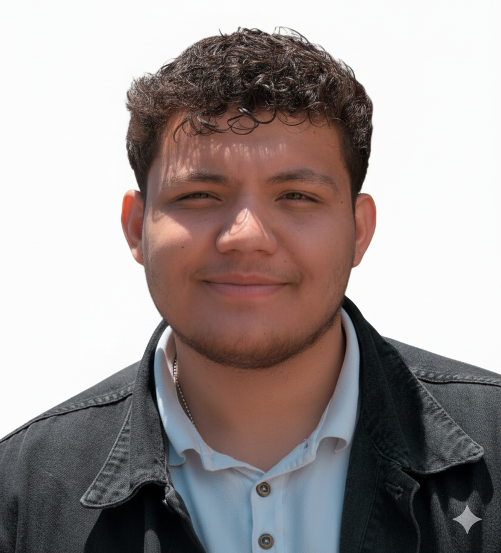

üë§ c.c 1.000.595.031
üìß orregonestor18.08@gmail.com | üìû 3213117319
üè† Carrera 8A #47B-48 Monte Carlo, Apt. 403, Tunja - Boyacá
üíº Soltero
Soy una persona responsable, dinámica y con deseos de superación. Me destaco por mi compromiso, puntualidad y honestidad. Poseo habilidades de comunicación, trabajo en equipo y atención al cliente, orientado siempre a contribuir con los objetivos de la organización mediante una gestión eficiente y colaborativa.
Apoyé la gestión administrativa, atención a clientes y organización de inventario, asegurando el correcto funcionamiento del gimnasio y la satisfacción de los usuarios.
| Nombre | Tipo | Empresa / Lugar | Contacto |
|---|---|---|---|
| Laura Mireya Ulloa Dueñas | Laboral | Body Healthy Gym & Spa Yopal, Casanare |
üìû 3118583758 ‚úâÔ∏è lamiulload@gmail.com |
| Anderson Rozo | Personal | Agroservicios Yopal Yopal, Casanare |
üìû 3175276418 |
| Liliana Patricia Zuleta Dueñas | Familiar | Gobernación de Casanare Secretaría de Salud Departamental |
üìû 3115227082 |